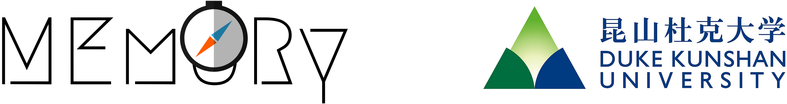

|
Home | CV | Publications | Teaching | Academic Duties
| |||
| |||
|
Email: mustafa.misir [at] dukekunshan.edu.cn / mm940 [at] duke.edu | |||
|  | |||
|
Leading the Machine lEarning and Operations Research (MEmORy) Lab |
|||
News
Research Interests
Evolutionary Algorithms, Computational Intelligence, Meta/Hyper-heuristics, Adaptive/Reactive/Autonomous Search, Algorithm Portfolios, Algorithm Configuration (Tuning + Control), Meta-learning, Empirical Algorithmics, Design of Experiments, Recommender Systems (Collaborative Filtering), Boolean Satisability, Constraint Programming, Combinatorial Optimisation, Data Mining (Knowledge Discovery), Decision Support Systems and Automated Planning / Scheduling Achievements / Awards
|